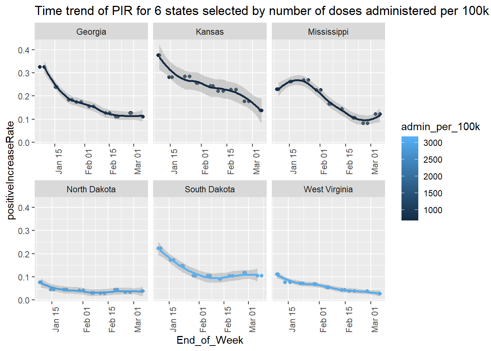
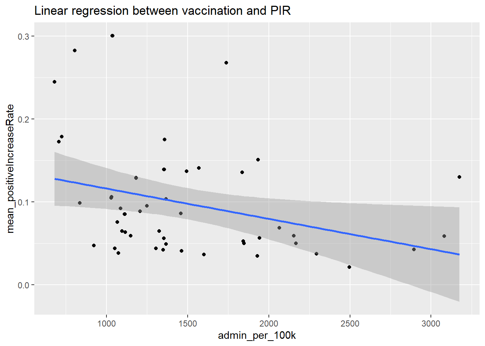
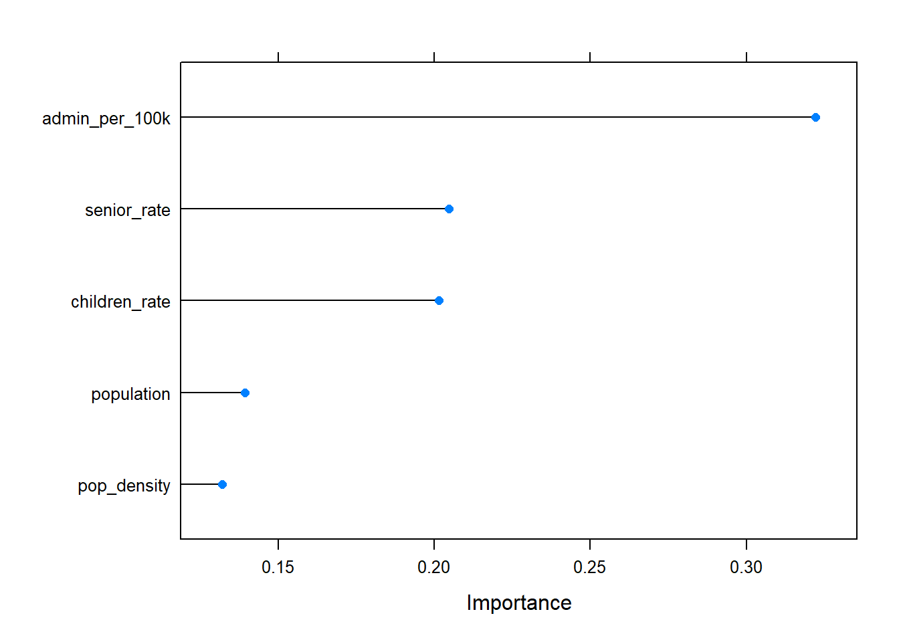

Coronavirus disease 2019 (COVID-19) is a highly contagious viral illness produced by the SARS-CoV-2 virus, which causes the severe acute respiratory syndrome. It has had a terrible effect on the globe’s demography, resulting in the deaths of almost 5.3 million people around the world. It has risen to become the most serious global health problem since the 1918 influenza epidemic. COVID-19 has been a worldwide pandemic since 2019, and we have all been affected by it.
The light at the end of the tunnel is getting closer thanks to rapid developments in science and technology. Major vaccination efforts are currently underway to immunize the world’s population. According to data collated by Our World in Data from health authorities, 39.7% of the world’s population has received at least one dose, with nearly 2.1 billion people completely vaccinated as of today.
Many analyses have been performed on all kinds of datasets for COVID-19 to find ways to fight it. For this project, we mainly analyzed COVID-19 data from the COVID tracking project. The COVID tracking project collected state-level metrics for COVID-19 cases, tests, hospitalizations, and outcomes from 2020/01/13 to 2021/03/07. The primary question we investigated with these data is whether the number and the trend of confirmed cases differ from state to state and whether it’s associated with vaccination, population and distribution of age groups.
For all interactive visualizations, please refer to https://helenlxy.github.io/JSC370/.
The COVID tracking project provides data API to download data. There are 20780 state-level COVID-19 observations of 56 variables, including the number of positive cases, tests, deaths and individuals who are currently hospitalized with COVID-19 etc.
We focused on the positiveIncrease and totalTestResultsIncrease variable, which is the daily increase of confirmed cases and PCR tests calculated based on the previous day’s value. Following the suggestions in this article, we used the 7-day average to show the general trends of data over a period of time due to the complexities of state reporting schedules and day-of-week effects.
Besides that, considering that different state has a different population which may affect the number of positive cases, we created a variable called positiveIncreaseRate which is calculated by dividing the positiveIncrease by the totalTestResultsIncrease (the rate will be 0 if totalTestResultsIncrease itself is 0) to calculate the daily confirmed case increase rate at state-level and used the rate to reflect the severity of COVID-19 for each state. PIR(positiveIncreaseRate) represents the percentage of daily PCR test results that are positive.
To ensure the collected data is accurate and stabilized, we only analysed records in 2021 as the data collection at the beginning of the pandemic may contain many errors.
| state | End_of_Week | positiveIncrease | totalTestResultsIncrease | positiveIncreaseRate | |
|---|---|---|---|---|---|
| Length:504 | Min. :2021-01-09 | Min. : 0.0 | Min. :-11262 | Min. :-0.005936 | |
| Class :character | 1st Qu.:2021-01-23 | 1st Qu.: 305.4 | 1st Qu.: 5635 | 1st Qu.: 0.037469 | |
| Mode :character | Median :2021-02-06 | Median : 976.7 | Median : 13464 | Median : 0.067768 | |
| NA | Mean :2021-02-06 | Mean : 2377.3 | Mean : 29741 | Mean : 0.122260 | |
| NA | 3rd Qu.:2021-02-20 | 3rd Qu.: 2683.9 | 3rd Qu.: 33518 | 3rd Qu.: 0.125937 | |
| NA | Max. :2021-03-06 | Max. :39852.7 | Max. :349787 | Max. : 1.000000 |
After cleaning and wrangling the COVID-19 data, there are 504 records with 5 variables remaining in our data set. The mean national daily increase of confirmed cases is 2377, the mean national daily increase of PCR tests is 29741 and the mean national PIR is 12% from 2021-01-03 to 2021-03-06.
Besides COVID-19 cases data, we also want to see if the difference between states is associated with vaccination. Therefore, we used the state-level COVID-19 Vaccinations data in the United States from Centers for Disease Contol and Prevention. CDC also provides data API so that we can acquire vaccination data on 2021-01-03 which is the beginning date in our COVID-19 data records. We focused on the Admin_Per_100K variable which is the total number of doses administered per 100,000 census population based on the jurisdiction where the recipient lives.
| location | admin_per_100k | |
|---|---|---|
| Length:65 | Min. : 0 | |
| Class :character | 1st Qu.:1031 | |
| Mode :character | Median :1349 | |
| NA | Mean :1404 | |
| NA | 3rd Qu.:1843 | |
| NA | Max. :5322 |
The mean number of doses administered per 100,000 census population in the U.S. is 1404 on 2021-01-03.
It’s noticeable that there are 65 locations in the vaccination data while there are only 48 contiguous united states. This is because the location variable from CDC contains state, territory and federal entities. To keep only the contiguous united states, we used a dataset that is used in Google DSPL. It also has the latitude and longitude of states which helps us draw maps in the following analysis. We also used us_census_data to access the population, population density and age groups of each state. We defined two variables: senior_rate which is the population percentage of seniors larger than 65 years old and children_rate which is the population percentage of children smaller than 14 years old.
| variable | type | first_values |
|---|---|---|
| state | character | AL, AR, AZ, CA, CO, CT |
| latitude | double | 32.318231, 35.20105, 34.048928, 36.778261, 39.550051, 41.603221 |
| longitude | double | -86.902298, -91.831833, -111.093731, -119.417932, -105.782067, -73.087749 |
| name | character | Alabama, Arkansas, Arizona, California, Colorado, Connecticut |
| population | integer | 4887871, 3013825, 7171646, 39557045, 5695564, 3572665 |
| pop_density | double | 96.50938865, 57.919684465, 63.135855048, 253.9065023, 54.955977559, 737.74459965 |
| senior_rate | double | 0.169172631601775, 0.169826383416423, 0.17544786789532, 0.143312651387382, 0.141904998346081, 0.172174273266595 |
| children_rate | double | 0.184456177341833, 0.193910728061516, 0.190205010119016, 0.189047867453193, 0.184386480425819, 0.167113905166032 |
Our state dataset has 6 variables, including the acronym and the full name of states, the latitude and longitude and the popululation and population density.
After acquiring, cleaning and wrangling the three data sets, we merged them into one data set for further investigation.
| state | End_of_Week | positiveIncrease | totalTestResultsIncrease | positiveIncreaseRate | admin_per_100k | latitude | longitude | name | population | pop_density | senior_rate | children_rate | |
|---|---|---|---|---|---|---|---|---|---|---|---|---|---|
| Length:432 | Min. :2021-01-09 | Min. : 59.14 | Min. :-11262 | Min. :-0.005936 | Min. : 680 | Min. :27.66 | Min. :-120.74 | Length:432 | Min. : 577737 | Min. : 5.951 | Min. :0.1109 | Min. :0.1512 | |
| Class :character | 1st Qu.:2021-01-23 | 1st Qu.: 546.11 | 1st Qu.: 7940 | 1st Qu.: 0.041820 | 1st Qu.:1084 | 1st Qu.:35.70 | 1st Qu.:-100.18 | Class :character | 1st Qu.: 2053888 | 1st Qu.: 52.132 | 1st Qu.:0.1571 | 1st Qu.:0.1770 | |
| Mode :character | Median :2021-02-06 | Median : 1336.21 | Median : 18661 | Median : 0.071859 | Median :1354 | Median :39.80 | Median : -89.09 | Mode :character | Median : 4773924 | Median : 107.594 | Median :0.1647 | Median :0.1846 | |
| NA | Mean :2021-02-06 | Mean : 2755.88 | Mean : 34312 | Mean : 0.097821 | Mean :1499 | Mean :39.49 | Mean : -91.11 | NA | Mean : 6756397 | Mean : 206.146 | Mean :0.1655 | Mean :0.1856 | |
| NA | 3rd Qu.:2021-02-20 | 3rd Qu.: 3056.64 | 3rd Qu.: 36471 | 3rd Qu.: 0.125937 | 3rd Qu.:1844 | 3rd Qu.:43.22 | 3rd Qu.: -78.93 | NA | 3rd Qu.: 7781114 | 3rd Qu.: 219.180 | 3rd Qu.:0.1730 | 3rd Qu.:0.1943 | |
| NA | Max. :2021-03-06 | Max. :39852.71 | Max. :349787 | Max. : 0.517140 | Max. :3174 | Max. :47.75 | Max. : -69.45 | NA | Max. :39557045 | Max. :1211.317 | Max. :0.2062 | Max. :0.2464 |
Now the dataset for analysis contains 432 records with 13 variables.
The COVID-19 and vaccination datasets were imported using data.table while the state dataset was scraped from the website using rvest. Three datasets were merged using dplyr, we processed the date variables and created a new date variable End_of_Week with the lubridate package. All tables were formatted using knitr and broom and all figures were created using ggplot2 except the map figure which was created using leaflet.
We first want to see whether the trend of PIR differs from state to state. We created two interactive visualizations to show the trend of PIR in each state in the U.S.
The PIR decreases from January to March for all states in general. But the fluctuation of the trend is not similar in each state. Some states like Texas even have an increase in the middle of February.
Idaho stands out in these plots as it has the highest daily positive increase at the beginning of 2021 as well as the end of the time interval. Alabama and Iowa also have a significant high PIR at the beginning of 2021.
As there are 48 states and is hard to analyse them together, we draw the trend of PIR for the 3 states that have the max total number of doses administered per 100,000 census population and for the 3 states that have the minimum value.

We can see that Georgia, Kansas and Mississippi are the three states that have the min number of doses administered per 100,000 census population while North Dakota, South Dakota and West Virginia are the three states that have the maximum value. The PIR decreases from January to March for all states in general. But the fluctuation of the trend is not similar in each state. And for the states with better vaccinated status, the PIR is under 10% most of the time and the max PIR is around 20%. However, for the states with worse vaccinated status, the PIR is always larger than 10% and is high up to 30%.
To see if there is a statistically significant difference, we can perform a two-sample t-test on the PIR records of state Georgia and North Dakota.
| method | estimate | statistic | p.value | conf.low | conf.high |
|---|---|---|---|---|---|
| Welch Two Sample t-test | 0.1297923 | 5.385796 | 0.0005119 | 0.0749025 | 0.1846821 |
The results above show a p-value = 0.0005119 < .01 supporting the alternative hypothesis that “true difference in means is not equal to 0”; essentially it states there is a statistical difference between the PIR in two states. Therefore, the PIR is significantly different from Kansas and South Dakota, indicating that the vaccinated status may influence COVID-19 cases.
Besides the trend, we are also interested in the mean PIR by each state and its association with vaccination. Therefore, we calculated the mean PIR and created two summary statistic tables showing the average PIR by state, one contains 10 states that have the min PIR and the other contains 10 states with the max PIR.
| state | name | mean_positiveIncreaseRate | admin_per_100k |
|---|---|---|---|
| VT | Vermont | 0.0211974 | 2496 |
| RI | Rhode Island | 0.0344550 | 1929 |
| MA | Massachusetts | 0.0365882 | 1600 |
| ME | Maine | 0.0371212 | 2295 |
| OR | Oregon | 0.0380925 | 1074 |
| MN | Minnesota | 0.0407118 | 1462 |
| IL | Illinois | 0.0418736 | 1349 |
| state | name | mean_positiveIncreaseRate | admin_per_100k |
|---|---|---|---|
| GA | Georgia | 0.1722605 | 708 |
| KY | Kentucky | 0.1751824 | 1358 |
| MS | Mississippi | 0.1784413 | 725 |
| KS | Kansas | 0.2446773 | 680 |
| IA | Iowa | 0.2678158 | 1739 |
| AL | Alabama | 0.2825607 | 804 |
| ID | Idaho | 0.3004453 | 1037 |
For the upper summary table where states have a higher mean PIR, the number of doses administered per 100,000 census population is also larger in general compared to the other table. The admin_per_100k in the upper table are all above 1000 and high up to 2496, while in the lower table, the admin_per_100k are mostly under 1000.
We then drew a map of the united states to see the mean PIR and number of vaccination.
The colour shows the number of doses per 100k. Colour closer to blue means less number of doses while closer to red means a larger number of doses. The size of the circles represents the mean PIR: a larger size indicates a larger PIR. We can see that most blue circles have a large radius, and as colour become closer to red, the radius tends to decrease. This map also tells us that, for states with a worse vaccinated status, the PIR in those states tend to be high.
To further investigate the association between vaccination and PIR, we draw a linear regression plot between these two variables.

The plot suggests that as the number of doses administered per 100,000 census population increases, the mean PIR decreases. There seems a negative linear regression between these two variables.
We can fit a linear regression model to examine whether the regression between these two variables is statistically significant.
| mean_positiveIncreaseRate | |||
|---|---|---|---|
| Predictors | Estimates | CI | p |
| (Intercept) | 0.15266 | 0.10108 – 0.20424 | <0.001 |
| admin per 100k | -0.00004 | -0.00007 – -0.00000 | 0.026 |
| Observations | 48 | ||
| R2 / R2 adjusted | 0.103 / 0.084 | ||
From the summary of the model, it can be seen that the p-value of the variable admin_per_100k is 0.026 < 0.05, which is highly significant. This means that it’s 95% statistically significant that the number of vaccination is related to the PIR.
The \(R^2\) of this model is 0.103 which is not very large. These may because the variability around the means are large. But we still can say the admin_per_100k coefficient suggests that for every 100 unit increase, holding all other predictors constant, we can expect a decrease of 0.3% in PIR, on average.
Finally, the linear model equation can be written as follow: \(PIR = 0.15266 - 0.00004*admin\_per\_100k\).
Other factors, such as population and population density, as well as the percentage of the population in each age group, may influence mean PIR in addition to vaccination. We provide two interactive visualizations that show the impact of population density and the percentage of children on the vaccine-PIR relationship.
Because most large circles in the plot are under most small circles, states with a high population density have a lower mean PIR than other states.
Because the majority of large circles in the plot are above most of tiny circles, states with a high child rate tend to have a higher mean PIR than the other states.
Using these 4 new variables, we fitted an multiple linear regression model.
| mean_positiveIncreaseRate | |||
|---|---|---|---|
| Predictors | Estimates | CI | p |
| (Intercept) | -0.53342 | -1.16151 – 0.09467 | 0.094 |
| admin per 100k | -0.00004 | -0.00007 – -0.00001 | 0.021 |
| pop density | -0.00001 | -0.00009 – 0.00007 | 0.792 |
| population | -0.00000 | -0.00000 – 0.00000 | 0.752 |
| children rate | 2.55430 | 0.65532 – 4.45327 | 0.010 |
| senior rate | 1.30906 | -0.45866 – 3.07677 | 0.143 |
| Observations | 48 | ||
| R2 / R2 adjusted | 0.336 / 0.257 | ||
The p-values of the variables admin per 100k and children rate are both less than 0.05, indicating that they are highly significant, according to the model summary. This suggests that it’s 95% statistically significant that the number of vaccination and the population percentage of children is related to the PIR.
This model has a higher \(R^2\) than the linear regression model, at 0.336. Adding independent variables to a simple linear model improves the \(R^2\) and consequently the model’s performance.
Finally, the equation for the linear model can be stated as follows: \(PIR = -0.53342 - 0.00004*admin\_per\_100k + 2.5543*children\_rate\).
We can also train an xgboost model with ‘xgboost’ and then execute a grid search on eta. We additionally determine the variable significance for the xgboost model.

The variable importance plot shows that the most important variables for predicting mean PIR using XGBoost are admin per 100k and age groups, whereas population and population density have only a minor impact on PIR.
By comparing the MSE for the XGBoost and MLR models:
## The test MSE for the XGBoost model: 7.335195e-07## The test MSE for the MLR model: 0.002677394We can see that the XGBoost model can predict the PIR well using the 4 variables.
In general, the PIR (positive increase rate: percentage of daily PCR test results that are positive) decreases from January to March in all states. However, the tendency fluctuates differently in each state. Some states, like Texas, have seen a rise in early February. Most of the time, the PIR in states with higher vaccination rates is under 10%, while the maximum PIR is around 20%. However, in states with lower vaccination rates, the PIR is always greater than 10% and can be as high as 30%. The PIR is statistically significantly different from the two states with the greatest and poorest vaccination status, showing that vaccination status may influence COVID-19 instances, according to a two-sample t-test.
We may conclude that states with poor vaccination status have a high PIR by using summary tables and a map that shows the mean PIR and vaccination status of each state. The equation \(PIR = 0.15266 - 0.00004*admin\_per\_100k\) can be constructed using a linear model to show that there is a negative linear regression between these two variables.
We added the variables population, population density, and the percentage of seniors and children in the population to create a better prediction model. In a multivariate linear regression model with equation \(PIR = -0.53342 - 0.00004*admin\_per\_100k + 2.5543*children\_rate\), only the vaccination and child rate are significant. Using these five factors, an XGBoost model can accurately estimate mean PIR using machine learning.
To summarise, the mean PIR and PIR trend differ from state to state, and the difference is highly significant concerning vaccination. We can deduce that the COVID-19 pandemic is less severe in states with better vaccination status and more severe in places with worse vaccination status if we use PIR to reflect the severity of COVID-19 for each state. An XGBoost model incorporating vaccination, population, population density, and the population percentage of seniors and children can perform well in predicting PIR.
Copyright © 2022, Xinyi Liu.